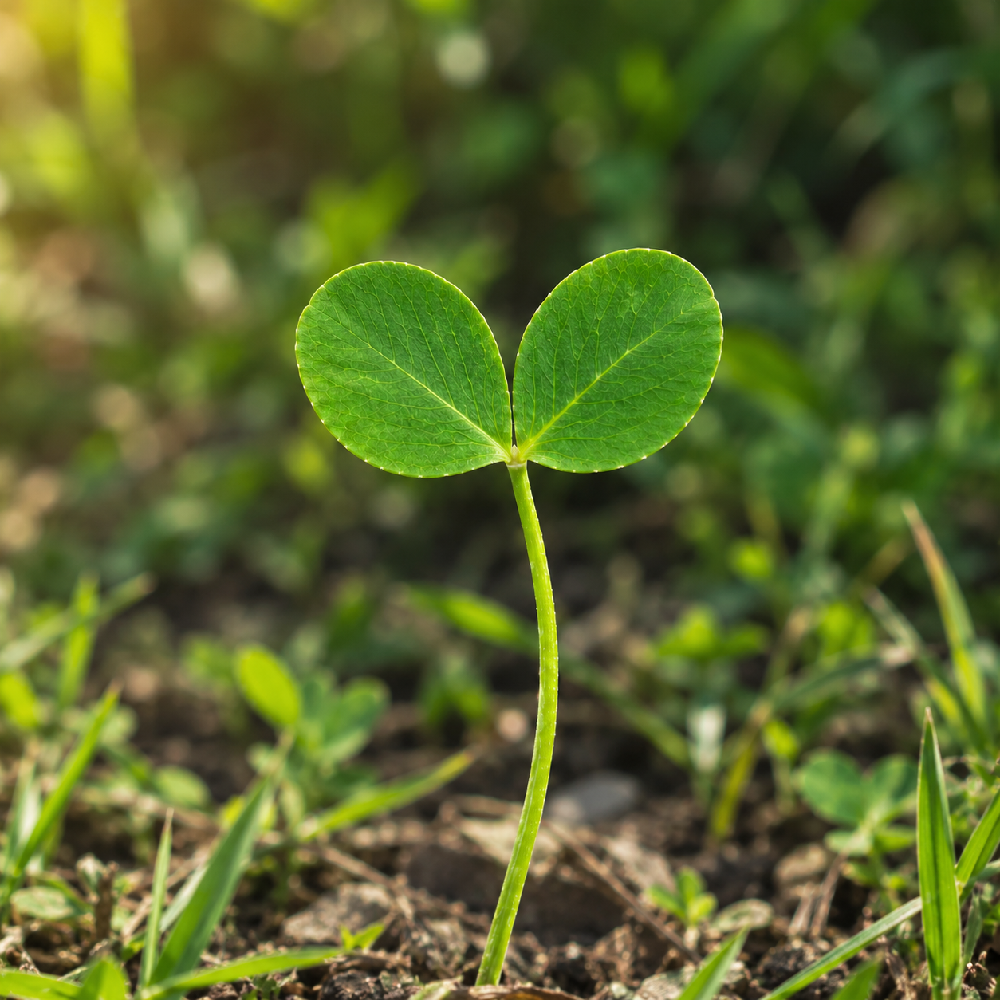
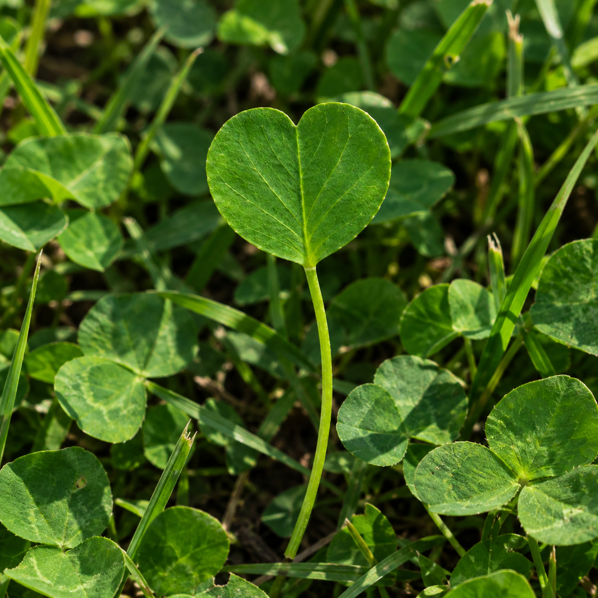

Clover
Menanam Harapan. Menumbuhkan Kemakmuran.
Berlandaskan iman, digerakkan oleh cinta, dan terbuka pada setiap peluang, kami percaya bahwa setiap perjalanan besar berawal dari sebuah harapan. Terinspirasi dari filosofi daun semanggi, kami menjadikan harapan, iman, cinta, dan keberuntungan sebagai nilai yang mengiringi setiap langkah dalam membangun sesuatu yang bermakna.
Kami hadir untuk terus menciptakan nilai, membuka peluang, dan mendorong pertumbuhan yang memberikan manfaat bagi banyak pihak. Dengan semangat untuk bertumbuh bersama, kami menanam harapan hari ini untuk menumbuhkan Kemakmuran yang berkelanjutan di masa depan.
Kenali Kami Jelajahi FilosofiTentang Kami
Tumbuh dari Nilai, Bergerak Menuju Kemakmuran
Clover hadir dengan sebuah keyakinan sederhana: setiap perjalanan yang berarti selalu dimulai dari sebuah harapan. Terinspirasi dari filosofi daun semanggi, kami membangun perusahaan dengan nilai Harapan, Iman, Cinta, Keberuntungan, dan Kemakmuran sebagai bagian dari identitas dan perjalanan kami. Nilai-nilai tersebut menjadi dasar bagi kami untuk terus bertumbuh, menciptakan peluang, dan memberikan arti dalam setiap langkah yang kami jalankan.
Bagi kami, sebuah perusahaan bukan hanya tentang apa yang dibangun, tetapi juga tentang nilai yang diberikan kepada orang-orang di dalam dan di sekitarnya. Kami percaya bahwa pertumbuhan yang sesungguhnya tercipta ketika setiap peluang dapat menjadi manfaat, setiap hubungan dibangun dengan ketulusan, dan setiap pencapaian dapat membuka jalan menuju kesempatan yang lebih besar.
Melalui semangat untuk terus berkembang, Clover berkomitmen untuk menciptakan nilai yang berkelanjutan bagi pelanggan, mitra, dan seluruh pihak yang menjadi bagian dari perjalanan kami. Kami menanam harapan, menguatkan langkah dengan keyakinan, berkarya dengan cinta, menyambut setiap peluang, dan menjadikan kemakmuran bersama sebagai tujuan dari setiap pertumbuhan.
Filosofi Daun
5 leaf Clover
Wealth
“Menjadi hasil dari setiap nilai yang ditumbuhkan.”
Kemakmuran melambangkan keberlimpahan, pertumbuhan, dan
kesejahteraan yang tercipta ketika harapan, iman, cinta, dan
keberuntungan berjalan bersama.
4 leaf Clover
Luck
“Menjadi kesempatan yang membawa perubahan.”
Keberuntungan adalah kesempatan baik yang hadir dalam
perjalanan, yang kami sambut dengan kesiapan untuk
mengubahnya menjadi sesuatu yang bernilai.
3 leaf Clover
Love
“Menjadi jiwa dalam setiap karya.”
Cinta mencerminkan ketulusan dalam berkarya, membangun
hubungan, dan memberikan nilai bagi orang-orang di sekitar
kita.

2 leaf Clover
Faith
“Menjadi kekuatan dalam setiap perjalanan.”
Iman adalah keyakinan yang menjadi landasan untuk tetap
teguh melangkah, menghadapi tantangan, dan percaya pada
proses.

1 leaf Clover
Hope
“Menjadi awal dari setiap langkah.”
Harapan adalah keyakinan bahwa selalu ada peluang untuk
tumbuh, berkembang, dan menciptakan masa depan yang lebih
baik.
Tanggapan
Clover
Lima Helai. Satu Makna.
Harapan untuk terus tumbuh.
Iman untuk terus melangkah.
Cinta untuk terus memberi.
Keberuntungan untuk menyambut
setiap peluang.
Kemakmuran untuk menikmati hasil dari setiap nilai yang ditumbuhkan.
Lima helai daun semanggi menjadi simbol perjalanan kami—dari sebuah harapan, tumbuh bersama iman dan cinta, menemukan keberuntungan dalam setiap kesempatan, hingga mencapai kemakmuran yang dapat dirasakan dan dibagikan bersama.
Kontak Kami
email : infoclover@gmail.com
telp : 08123456789
Lainnya